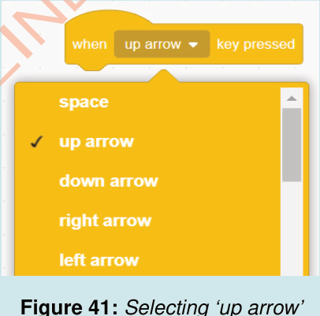

13. Change the numbers so that the first slot has the number 6 and the second slot has the number 10. Play the game again. This is not a true condition because 6 is not greater than 10. What did you hear/feel this time?
Activity 14: Creating a game to make a ‘Sprite’ (Cat) go up and down while producing a sound
The following steps will guide you in creating a game that will enable a player to move a Sprite up or down. Also, the Sprite will produce a sound.
Steps
1. Click/press on the ‘Events’ block menu.
2. Drag/use arrow keys and drop the ‘when key pressed’ block to the script area, as shown in Figure 41. Then, select the ‘up arrow’.

3. Click/press on the ‘Motion’ block menu.
4. Drag/use arrow keys and drop the ‘move steps’ block into the script area.